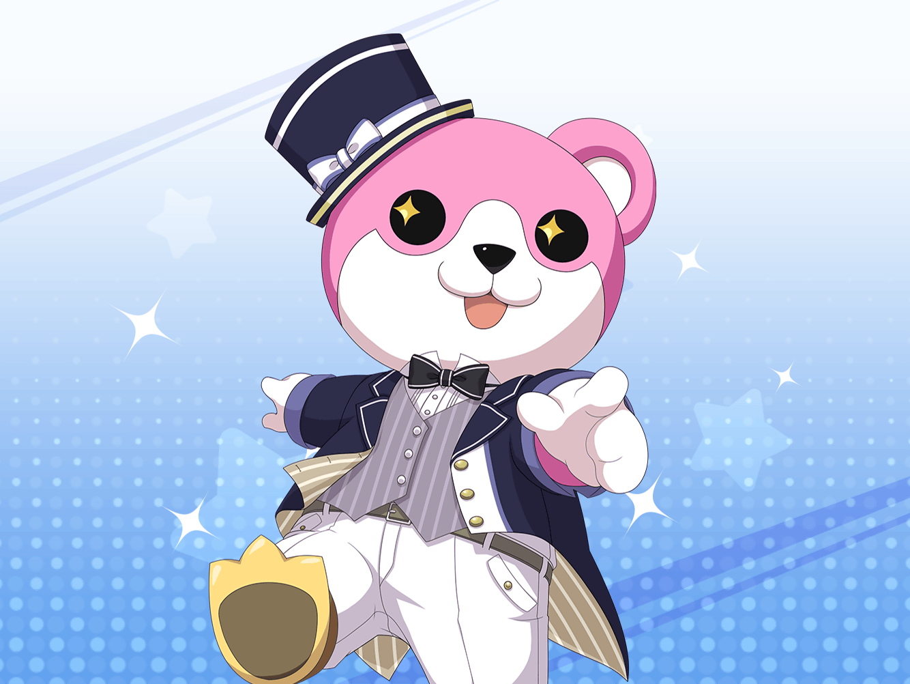

CiRCLE スタジオ
美咲
あと、これをこうやってと……
美咲
これでほぼ完成かな……
ふう、完成っと……
美咲
……うん。
なかなかいい感じに完成したんじゃない？
薫
おや、美咲。
今日はずいぶんと早いんだね
美咲
あ、薫さん。
ちょっとやることがあって早めに来てました
薫
やること？
薫
ぜひ聞きたいな。
美咲のことなら、なんでも知りたいからね
美咲
はー、別にそんな大したことじゃないですけど……
これです、羊毛フェルト
美咲
この前の水族館のあと、花音さんが
ペンギンの羊毛フェルトを作ってるんで、
あたしも久しぶりにやろうかなって
薫
なるほど。
それを作って、私にプレゼントしてくれるんだね？
美咲
い、いえ……
これは妹にあげるやつなんで……
薫
しかしなかなか鮮やかな手つきだね。
見事な腕前だよ
美咲
いえいえ、単なる趣味ですから。
最初は、作ると妹が喜んでくれるんで、作ってただけで……
美咲
けど、今はわりと作るのも好きになりましたね。
あたし、こういう細かいことわりと好きなんで
薫
それは……イルカかい？
美咲
はい、イルカですね。
花音さんも、前に作ってたんで、あたしもやってみました。
わりと自信作ですよ
薫
その自信作を私にくれるのかい？
美咲
だから、これは妹にあげるやつなんで……
薫
これをもらえる人はとても幸せ者だよ。
……つまり私は幸せ者だ
美咲
あの……聞いてます？
これは妹にあげるやつなんですって
薫
そうだ美咲！
もしよければ、そのイルカの他にもう１つ、
私のために作ってくれないかな？
美咲
別に作るのはいいんだけど……
このイルカは妹にあげますから。
約束もしちゃってるんで
薫
ふふ。
何を作ってもらおうかな
美咲
（ダメだ……全然人の話聞いてない……）
薫
作ってもらうもの……
うーん、そうだね……あっ！
美咲
できるだけ、作りやすい物にしてもらえると、
嬉しいなーと思ってるんですけど
薫
ふふ、心配はいらないよ、美咲
薫
私の作ってもらいたい物、それは……
薫
儚いもの、だね
美咲
……えっ？
儚い……もの？
薫
そこに存在しているのに、
手を触れた途端に消えてしまいそうな……
今にも壊れてしまいそうな……
薫
……そんなもの、だね
美咲
いや、ムリでしょ。
そんなの羊毛フェルトじゃ作れないから
薫
いやいや、本当に楽しみだ。
美咲がどんな儚いものを私に作ってくれるのか
美咲
だからムリですって！
薫
羊毛フェルトで作られたイルカと、儚いものが並ぶ姿……
想像しただけで……ああ、儚い……
美咲
（だ、ダメだこの人、何にも話聞いてないよ……）